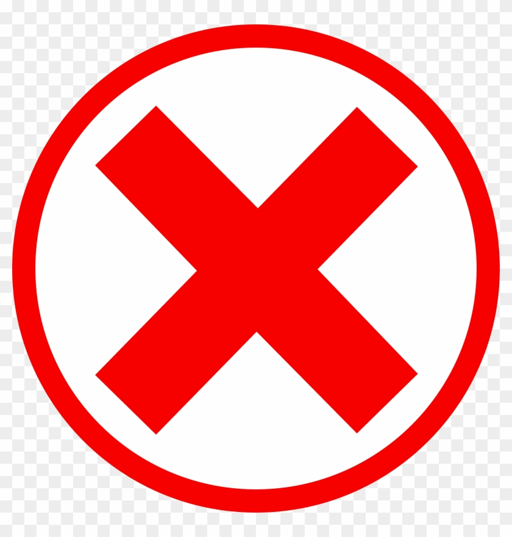

<!-- Copyright (c) 2022 8th Wall, Inc. -->
<!-- body.html is optional; elements will be added to your html body after app.js is loaded. -->

<div id="splashimage">
    <div id="start" style="display: none;">
      <h2>Start app</h2>
    </div>
  </div>
  
  <div id="quizbutton" style="display: none; z-index: 10">
    <h2>Quiz</h2>
  </div>

  <a-scene 
  splash-image
  quiz-button
  xrextras-gesture-detector
  landing-page
  xrextras-loading
  xrextras-runtime-error
  xrextras-tap-recenter
  renderer="colorManagement: true"
  xrweb
  vr-mode-ui="enabled: false"
  embedded
  arjs="sourceType: webcam; debugUIEnabled: false;"
  >
  
    <!--The light component defines the entity as a source of light-->
    <a-entity
        light="type: directional;
           intensity: 0.8;
           castShadow: true;
           shadowMapHeight:2048;
           shadowMapWidth:2048;
           shadowCameraTop: 10;
           target: #model;"
        position="1 4.3 2.5"
        xrextras-attach="target: model; offset: 1 15 3;"
        shadow>
    </a-entity>
  
    <a-light type="ambient" intensity="1"></a-light>
    
    <!--The camera component defines from which perspective the user views the scene-->
    <a-camera 
          id="camera"
          position="0 4 10"
          gps-camera>
      
        <a-cursor 
          cursor="fuse: true; fuseTimeout: 500" 
          position="0 0 -1" 
          geometry="primitive: ring"
          material="color: #DDDDDD"
          shader= "flat">
        </a-cursor>
  
    </a-camera>  
  
    <!--object in plane-->
    <a-assets>
         <a-asset-item id="zwaard" src="assets/zwaard.glb"></a-asset-item>
         
         
         
         
  
         
         
         
           <a-mixin
            id="questionSize"
            geometry="primitive: plane; width: 4.5; height: 3.2"
            position="0 0 0.005" ></a-mixin>
            
            <a-mixin
            id="truefalseSize"
            geometry="primitive: plane; width: 1; height: 1"
            position="0 0 0.005" ></a-mixin>
  
            <a-mixin
            id="closeSize"
            geometry="primitive: plane; width: 0.5; height: 0.5"
            position="0 0 0.005" ></a-mixin>
    </a-assets>
  
    <!--3D object-->
    <a-entity
          id="model"
          gltf-model="#zwaard"
          class="cantap"
          xrextras-hold-drag
          xrextras-two-finger-rotate
          xrextras-pinch-scale
          scale="0.003 0.003 0.003"
          rotation="0 0 -60" 
          gps-entity-place="latitude: 50.864563513227445; longitude: 4.669685959815961;">
    </a-entity>
  
    <!--question-->
    <a-entity id="ui" position="0 0 0" visible="false" class="cantap">
      <a-entity id="menu" class="cantap">
          
          <a-entity id="questionPicture" position="0 0.8 0" class="cantap">
              <a-entity material="src: #question;" mixin="questionSize"></a-entity>
          </a-entity>
  
          <a-entity id="closePicture" position="2.5 3 0" class="cantap" close-listener>
                 <a-entity material="src: #close;" mixin="closeSize"></a-entity>
          </a-entity>
  
          <a-entity id="truePicture" position="-1 -2 0" class="cantap" true-listener>
              <a-entity material="src: #true" mixin="truefalseSize"></a-entity>
          </a-entity>
  
          <a-entity id="falsePicture" position="1 -2 0" class="cantap" false-listener>
              <a-entity material="src: #false" mixin="truefalseSize"></a-entity>
          </a-entity>
      </a-entity>
    </a-entity>
    
    <!--right or wrong answer-->
    <a-entity id="right" material="src: #right;" visible="true"></a-entity>
    <a-entity id="wrong" material="src: #wrong;" visible="true"></a-entity>
  
    <!--flat surfaces using the geometry component-->
    <a-plane 
      id="ground"
      rotation="-90 0 0"
      width="1000"
      height="1000"
      material="shader: shadow"
      shadow>
    </a-plane>  
  
    <!--take photo button-->
    <xrextras-capture-button capture-mode="photo"></xrextras-capture-button>
  
    <!--configure capture settings-->
    <xrextras-capture-config
        watermark-max-width="100"
        watermark-max-height="10"
        file-name-prefix="zwaard-image-"
        request-mic="manual">
    </xrextras-capture-config>
  
    <!-- add capture preview -->
    <xrextras-capture-preview></xrextras-capture-preview>

  </a-scene>
